Read aloud together
Plip. Plop. Plip. (Tap your fingers on the table like rain.) It is raining in the garden. Big Wonderer holds the umbrella, and Little Wonderer stands close.
Look: the rain runs along the path and gathers in a low dip. That is how a puddle is made. Water slides to the lowest place, and it waits there.
Ask: Where would the water stop on our street?
Little Wonderer gives one small hop. SPLASH! Drops jump up like a crown, and rings spread out, out, out. (Draw a ring in the air.)
When the rain stops, the puddle becomes a mirror. Ask: What can you see in it?
Then the sun comes out, and the puddle starts to go away. Some water soaks down into the soil, where the roots drink. Some rises into the warm air, in bits too small to see. Some trickles downhill to the garden bed.
Ask: Which way do you think our puddle went?
Big Wonderer smiles at the sky. “The clouds will bring it back.” And they wave goodbye, until the next rain.
Tonight, step by step
- Read the story aloud together and stop at each “Ask”.
- Print the pack and pick two or three pages; there is no need to do them all.
- Point, circle, trace and color. Snip only with a grown-up.
- Fold the picture book and read it again at bedtime.
Inside the printout
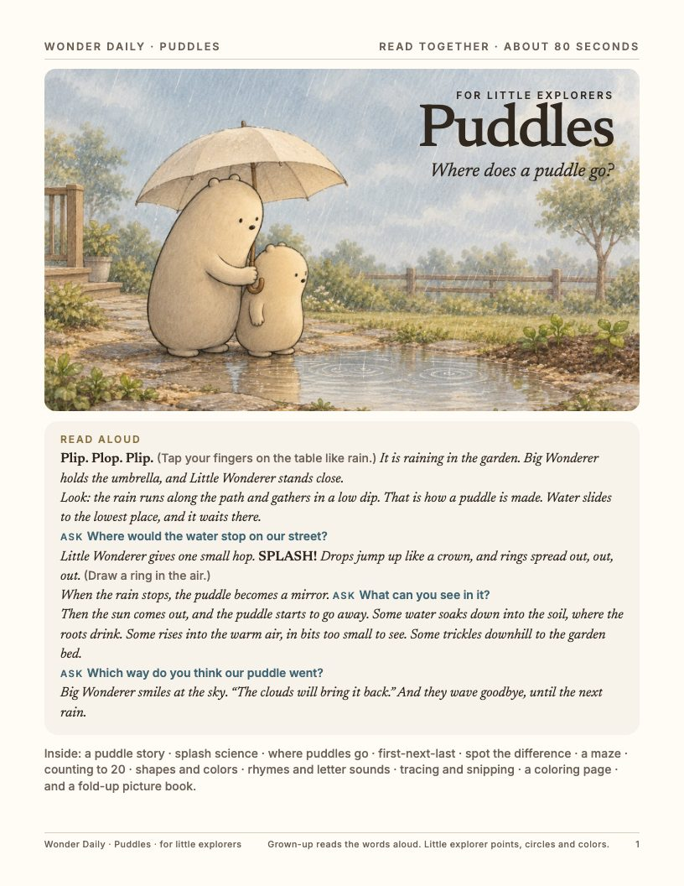
1. Cover and read-aloud 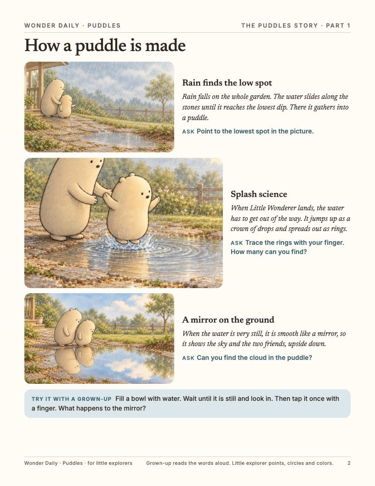
2. The story 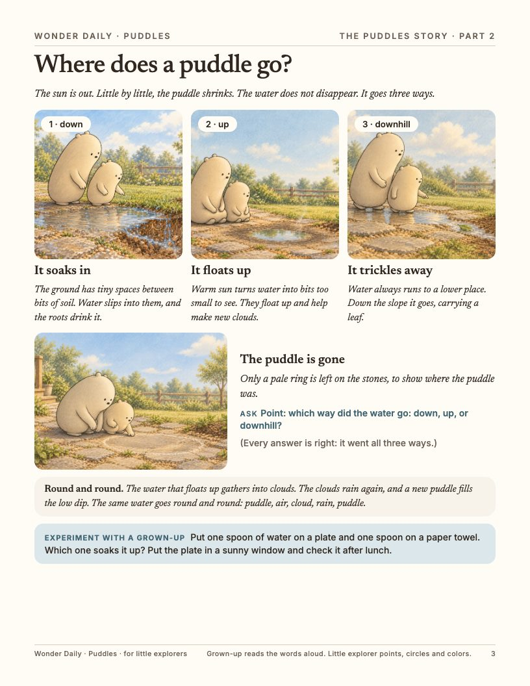
3. Science and an experiment 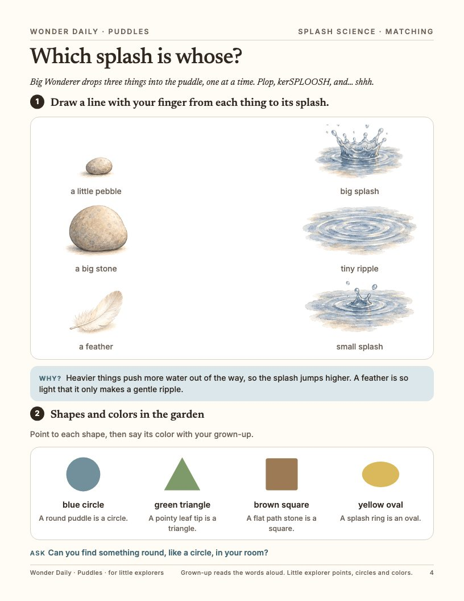
4. Matching, shapes and colors 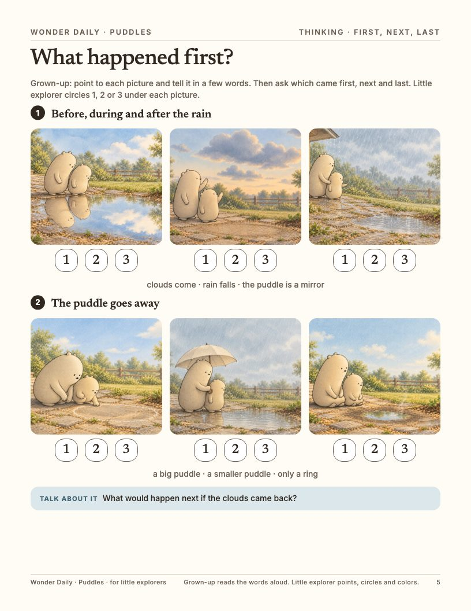
5. First, next, last 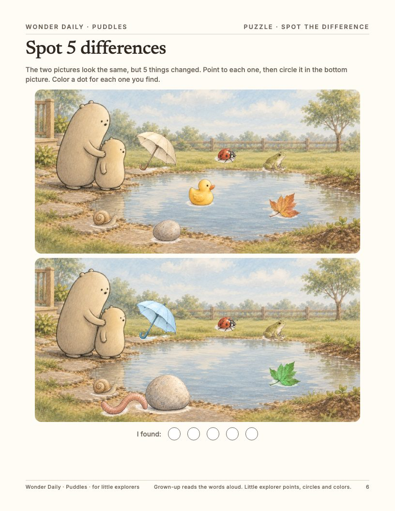
6. Spot the difference 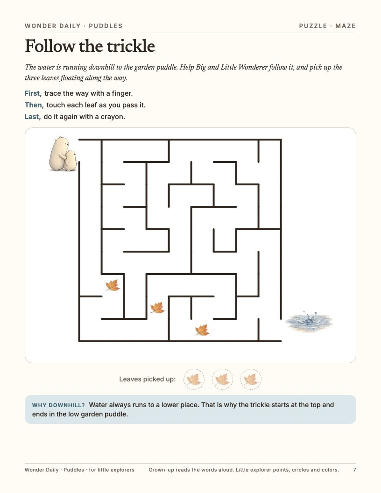
7. Maze 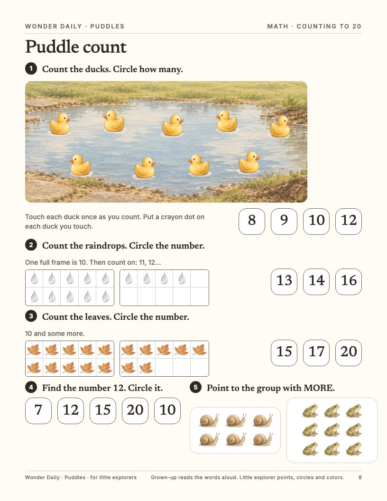
8. Counting to 20 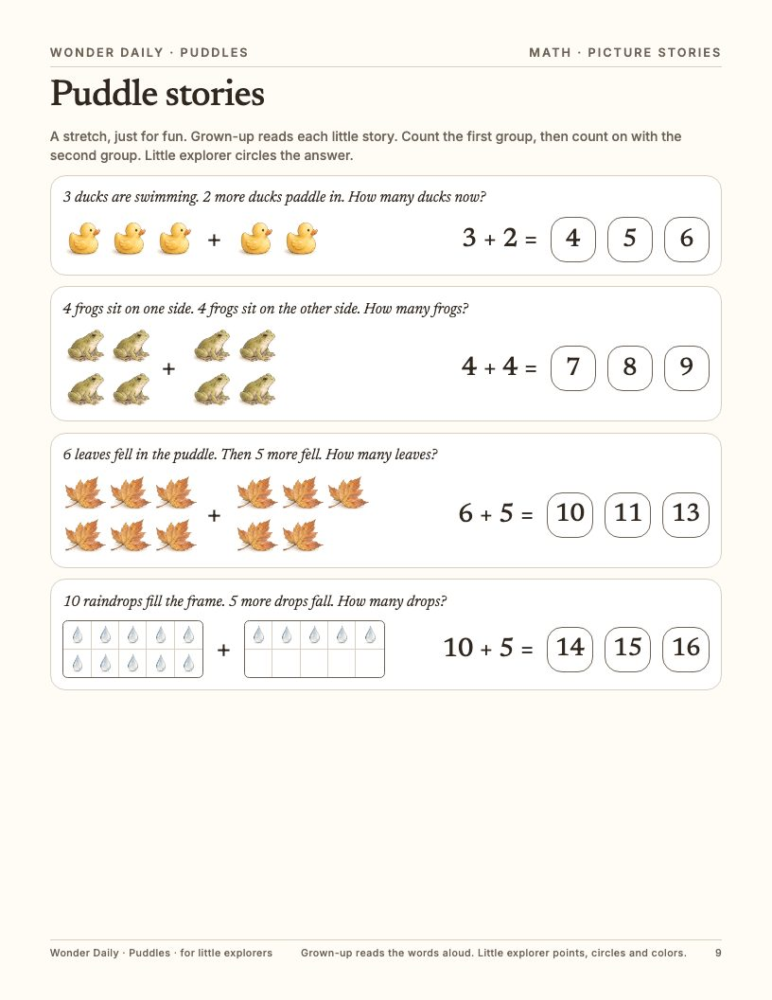
9. Picture stories 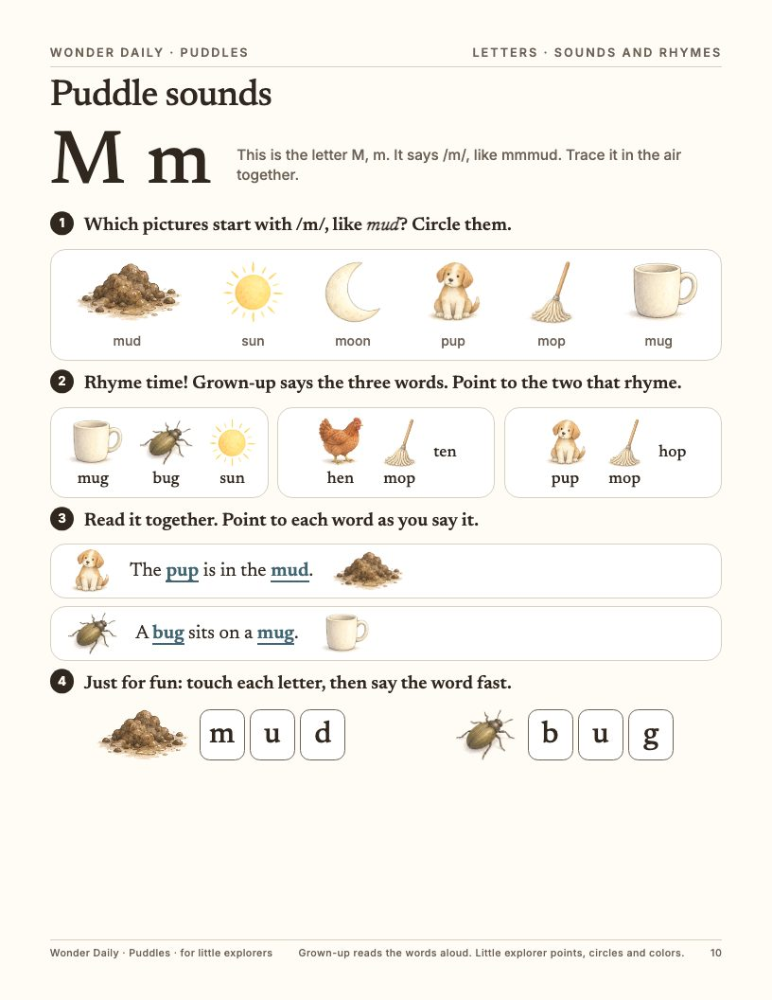
10. Sounds and rhymes 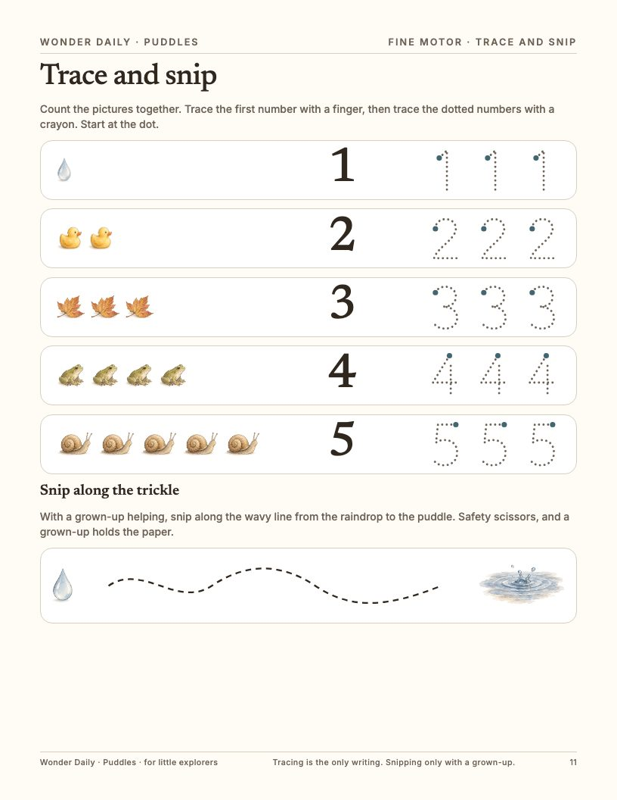
11. Trace and snip 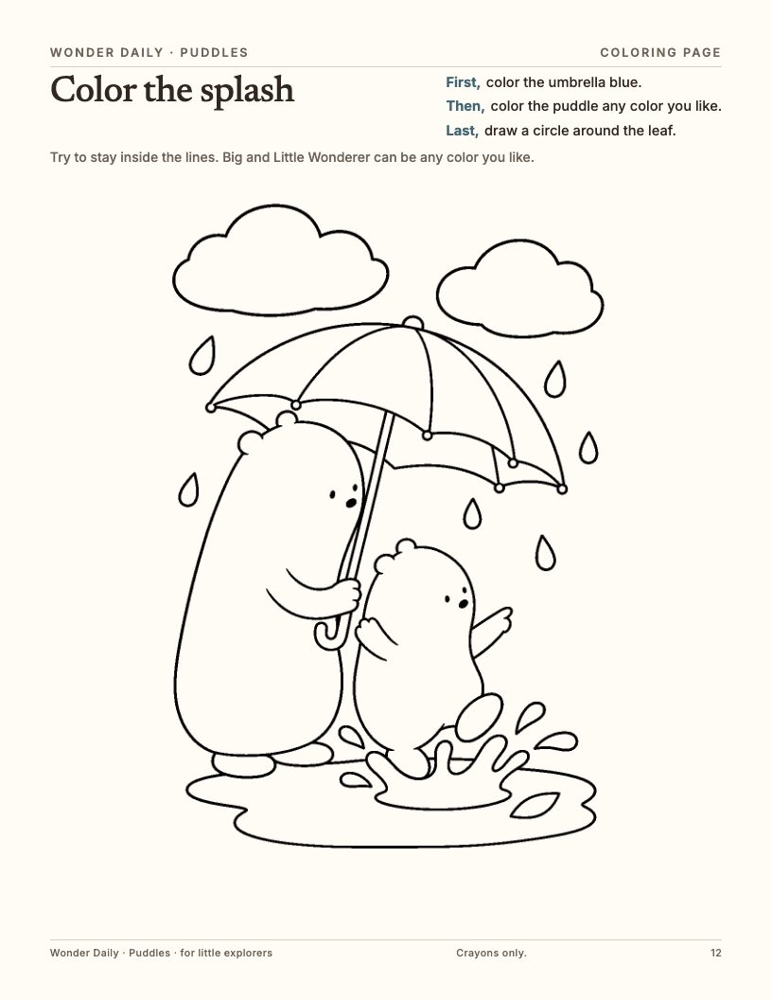
12. Coloring page